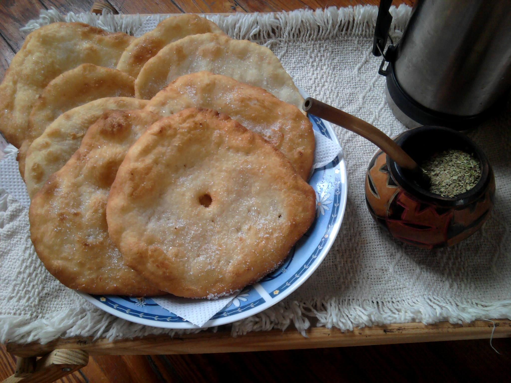

Pocas tradiciones están tan arraigadas en nuestra cultura como preparar tortas fritas cuando el cielo se pone gris. Crocantes, doradas y con esa combinación perfecta de masa tierna por dentro, son el acompañamiento imbatible del mate.